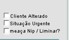

Gerador de Observação - SAC
Nome do Beneficiário *
Tipo *
Selecione
Titular
Dependente
Representante
Classificação da Demanda *
Selecione
Reclama
Solicita
Elogia
Sugere
Informa
Atendimento Rápido
⚠️ Atendimento Rápido exige descrição da situação ocorrida.
Em que momento utilizar cada flag?
Cliente Alterado:
comportamento exaltado ou fora do tom.
Situação Urgente:
risco à saúde ou emergência.
Ameaça NIP / Liminar?:
menção à ANS ou judicialização.

Como e por que aconteceu? *
Exemplo:
“Cliente relatou que no dia 10/04, ao tentar agendar consulta pelo aplicativo, o sistema apresentou erro e impediu o agendamento.”
Onde aconteceu? Local/Região/Cidade
Quando aconteceu? Data
Quando aconteceu? Horário
⚠️ Não esqueça de
flegar no SIGO
quando o beneficiário estiver atritado!
Gerar Frase
Limpar Campos
Copiar Frase
Histórico de Observações
Limpar Histórico